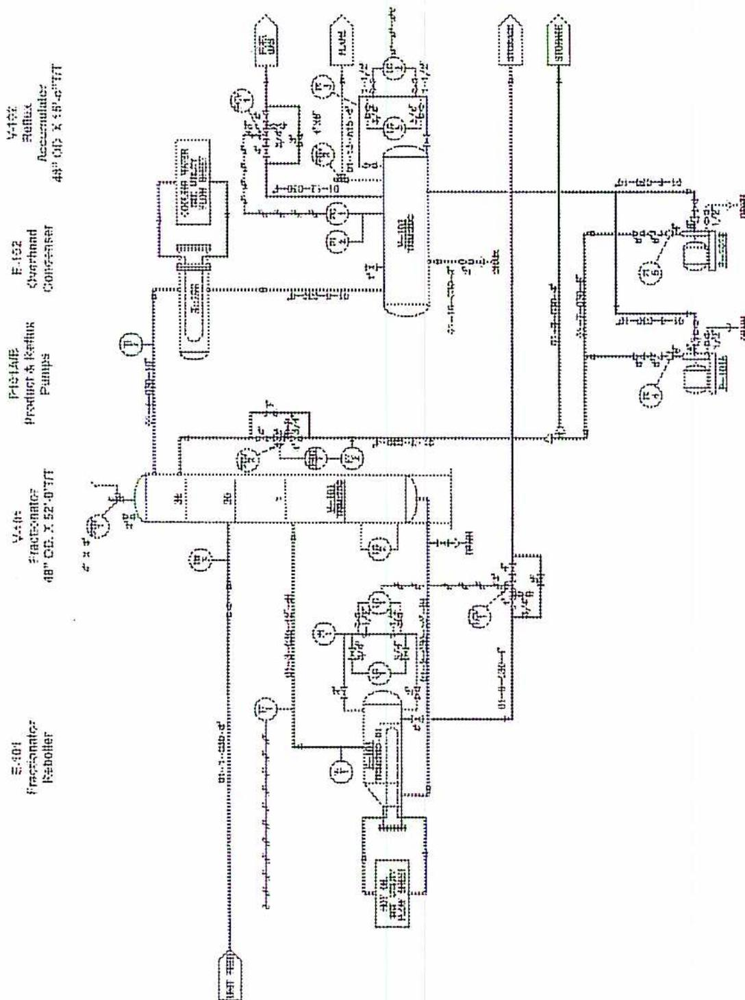
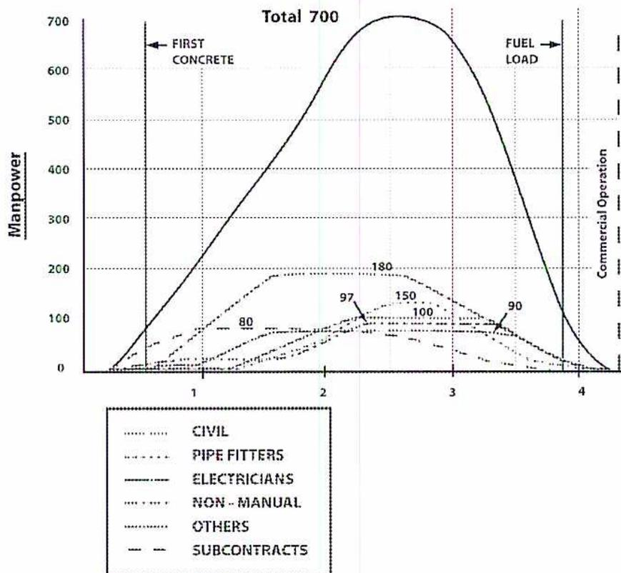

Plant Design and Installation
4
Learning Outcome
When you complete this learning material, you will be able to:
Explain the codes and procedures involved in the design and construction of a new plant.
Learning Objectives
You will specifically be able to complete the following tasks:
- 1. State the codes and standards, which must be followed when designing and building a new plant.
- 2. Describe the steps involved in developing specifications and contracts for new installations and modifications.
- 3. Explain the major steps involved in the design and construction of a new plant.
- 4. Explain the roles and responsibilities in the design and construction of a new plant.
- 5. Explain how the design and construction of a new plant are administered and controlled.
Objective 1
State the codes and standards that must be followed when designing and building a new plant.
When a new plant is designed and built, the codes and standards for the location of the new plant must be followed. A plant installed in Canada must be built to standards and codes used by the province. For example, an oil sands plant installed in Alberta must meet all of the standards and codes adopted in Alberta.
Because the codes are updated regularly, the newest version of the codes must be used. Each engineering discipline has codes and standards that must be followed. Engineering disciplines include: environmental (includes water and air), civil, chemical, mechanical, and electrical.
Provincial jurisdictions also require companies to obtain work permits before work on buildings or facilities commence. These permits fall under the following areas: electrical codes, plumbing codes, building codes, fire codes, and gas codes. Other standards that must be adhered to are environmental, air, water and wastewater, and transportation.
Local standards involve such items as traffic, noise, odour, and appearance.
Benefits of obtaining a permit are that: the installation conforms to construction and safety standards accepted under the Safety Codes Act, and certified codes officers do inspections.
The following codes and standards are declared in force with respect to pressure equipment:
- • The following provisions of Canadian Standards Association (CSA) B51-97, Boiler, Pressure Vessel, and Pressure Piping Code
- • Part 1, Boiler, Pressure Vessel, and Pressure Piping Code including Appendix I Automotive Propane Vessel Standards
- • Part 2, High-Pressure Cylinders for the Onboard Storage of Natural Gas as a Fuel for Automotive Vehicles
- • Part 3, Requirements for Compressed Natural Gas (CNG) Refuelling Station Pressure Piping Systems and Ground Storage Vessels
- • CSA B52-99, Mechanical Refrigeration Code
- • CSA Z662-1999, Oil and Gas Pipeline Systems
American Society of Mechanical Engineers (ASME) Boiler and Pressure Vessel Code - 2001; The ASME Codes are extensively used by power engineers, because they apply to power boilers, pressure vessels, and pressure piping.
- • Section I, Power Boilers, contains the requirements for the field assembly of power boilers and external piping.
-
• Section II Materials
- Part A- Ferrous Materials Specifications
- Part B- Nonferrous Material Specifications
- Part C- Specifications for Welding Rods, Electrodes and Filler Metals
- • Section IV- Heating Boilers
- • Section V - Nondestructive Examination
- • Section VI- Recommended Rules for the Care and Operation of Heating Boilers
- • Section VII- Recommended Guidelines for the care of Power Boilers
- • Section VIII - Unfired Pressure Vessels, contains the requirements for the remainder of the plant pressure piping and pressure vessels.
- • Section IX - Welding and Brazing Qualifications
- • ASME B31.1, Power Piping, contains requirements for the installation of boiler external piping, and makes reference to ASME Code, Section I
- • ASME B31.3 - 1999 Process Piping
- • ASME B31.4 - 1998 Transportation Systems for Hydrocarbons
- • ASME B31.5 - 2000 Refrigeration Piping
- • ANSI K61.1 - 1999, Safety Requirements for the Storage and Handling of Anhydrous Ammonia
- • National Fire Protection Association (NFPA) 58 - 1996, Liquefied Petroleum Gas Code
- • MSS SP-25 - 1998, Standard Marking System for Valves, Fittings, Flanges and Unions; MSS is the Manufacturing Standardization Society. They produce many standards for piping, valves, and fittings.
- • TEMA - 8th Edition Standards of Tubular Exchanger Manufacturers Association
The standards developed by the various organizations become a base for the codes in order to determine the quality of the material and the workmanship.
Research and Testing Organizations
- • ASTM -The American Society for Testing and Materials
- • NFPA - National Fire Protection Association
- • UL - Underwriting Laboratories
- • FM - Factory Mutual Engineering Corp.
- • ANSI - The American National Standards Institute
Professional Associations
- • ASHRAE - The American Society of Heating, Refrigerating and Air Conditioning Engineers
- • ASCE - The American Society of Civil Engineers
- • ASME - The American Society of Mechanical Engineers
Trade Associations
- • APA - The American Plywood Association
- • SMACNA - Sheet Metal and Air Conditioning Contractors' National Association
- • ACI - American Concrete Institute
Objective 2
Describe the steps involved in developing specifications and contracts for new installations and modifications.
Feasibility Studies
Before an industrial plant can be constructed, an engineering or feasibility study must be completed to evaluate the feasibility of the plant. The study is used to determine the plant size and to estimate costs. The company building the plant may have a large enough engineering staff to complete the study itself, or it may be contracted to an engineering company. A separate engineering company does the detailed engineering. Detailed engineering has the information and specifications required to construct the plant.
The primary emphasis of the engineering feasibility study is economics. The study is used to determine the cost of the new plant and to ascertain its economic viability – whether the plant can make a profit. If the plant design appears profitable, the study is used to obtain capital funds to build the plant. The study includes the cost of building the plant as well as other related costs such as: operation of the plant, maintenance, depreciation, insurance, interest, and taxes. With this information, an operating and maintenance budget for the proposed plant is developed.
The feasibility study must also address other issues that will affect the viability of building and operating a new plant, and which also impact the cost of construction and operation. These include the following:
- • Potential for air, water, and ground pollution, and the need for monitoring and mitigating equipment
- • Potential for unacceptable levels of noise, and the need for monitoring and mitigating equipment
- • Local regulations and bylaws which need to be complied with
Detailed Design and Specifications
After a new plant site is selected and the various government approvals are obtained, the design of the plant is finalized. Usually, the general plant design and physical size are required to get the approvals.
Detailed design follows the acceptance of the feasibility study, funding, and procurement of permits. There are different priorities at each plant, but some of the basic
choices that have to be made are: type of fuel used, the production process used, amount of auxiliary equipment, the types of instrumentation and control, and power supply.
The engineering company contracted to design the plant finalizes the design of the plant. Plot plans for the plant site, including roads, buildings, process units, and offsite facilities are produced. The engineering company completes the design drawings that tie the process units together. The engineering company produces drawings and specifications, with the amount of detail required for construction companies to create competitive bids.
The larger process areas of the plant are often purchased as standard or proven designs. For example, a new power plant may have a steam generator supplied by Babcock and Wilcox and a turbine supplied by Hitachi. These are proven designs that have been used in other plants. Babcock and Wilcox supplies the detailed drawings and specification sheets for the steam generator and its associated equipment. Hitachi supplies the drawings and specifications for the turbine and electric generator and associated equipment. The engineering company completes the engineering required to attach the equipment supplied by the main vendors. This engineering includes such things as interconnecting piping, electrical systems and instrumentation.
The plant owner stays involved during the design process. Any additions or options the owner specifies are incorporated into the design. It is cost effective to incorporate changes to the design at the design stage, rather than after construction has commenced.
Drawings and Specifications
Drawings and specifications are necessary to obtain bids for construction, to supervise the purchasing, and for construction of the plant. The drawings are a graphic representation of the plant, while the specification sheets provide details of the components of the plant. The drawings include the location of the equipment including interconnecting piping and wiring. Between the two, the work to be done is clearly defined. The specifications should include the details of each item shown on the drawings. Specifications are intended to be very detailed although they also include some general stipulations and conditions relating to the work as a whole.
For example, in a piping system for an industrial plant, the drawings show the piping layout including detailed dimensions. The piping drawings also refer to the piping specifications. This is done with a piping specification number. The Process and Instrumentation Drawing (P & ID) in Fig. 1 contains piping line numbers. Refer to the specification number to obtain details for the piping. The specifications for the piping lists all of the design requirements including:
- • Design pressure and temperature
- • Operating temperature and pressure
- • Grade designation or the schedule of the pipe fittings and valves
- • Type and pressure ratings of the joints including any special requirements
- • Quality of materials including inspection and acceptance requirements
- • Instrumentation including control valves
Developing Drawings and Specifications
The engineering company produces preliminary drawings that contain enough detail to do the feasibility study of the plant but not enough detail to construct the facility. Drawings included in the feasibility study are Process Flow Diagrams (PFDs) of the overall plant process streams. There are also plot plans showing all roads, buildings, offsite facilities, and storage facilities. At this stage a preliminary set of Process Flow Diagrams has been created.
The design specifications and the isometric or Computer Assisted Drafting (CAD) drawings are done after the feasibility study has been completed. This is the detailed design stage. At this stage, the drawings and plot plans have complete details and refer to the design specifications. The specifications must also contain all the details needed for purchasing materials and for plant construction.
Plant Modifications
When a plant adds new equipment, the existing specifications are used if possible. For example, if a new feedwater pump is added to an existing system, the P&ID drawings are modified to include the additional piping. The piping specifications listed on the P&ID refer to the existing specifications. When new piping is added with different specifications from the existing piping, the specifications sheets have to be updated. This happens if the new system uses different material, is a different size, or has different pressure or temperature ratings.
If a new unit (boiler or process train) is added to an existing plant, it will have its own set of drawings and specifications. Existing specifications can only be used when the new unit is similar to existing units.

The diagram illustrates a fractionation process. On the left, the Fractionator (V-401, 48" OD x 52'-0" T/T) is the central vessel. It is connected to a Fractionator Reboiler (E-401) at the bottom. Steam (LPS) enters the reboiler through a control valve regulated by a temperature controller (TIC) on the column. The bottom product is pumped out by pumps P-401A/B to storage. The overhead vapor from V-401 goes to the Overhead Condenser (E-402), which uses cooling water. The condensed liquid flows into the Reflux Accumulator (V-402, 48" OD x 15'-0" T/T). From V-402, liquid is pumped back to the top of the column as reflux or sent to storage as product, controlled by a level controller (LIC) on the accumulator. Non-condensables from the accumulator are vented to the flare or fuel gas system. Instrumentation includes pressure indicators (PI), temperature indicators (TI), flow indicator controllers (FIC), and level indicator controllers (LIC) throughout the system.
Fractionator
Reboiler
Fractionator
48" OD x 52'-0" T/T
Product & Reflux
Pumps
Overhead
Condenser
Reflux
Accumulator
48" OD x 15'-0" T/T
Figure 1
Process and Instrument Diagram
Objective 3
Explain the major steps involved in the design and construction of a new plant.
PLANT DESIGN
The design of a new plant goes through several phases, even before the detailed engineering begins. The first step is the feasibility study used to decide whether the plant is economically feasible. Once through the feasibility phase, the engineering proceeds to the detailed design which produces the drawings and specifications needed to purchase materials for construction.
Engineering Study
This phase is also called a feasibility study. In its basic form, it is used to determine whether the plant should be constructed and if the plant makes economic sense for the corporate or government owner. The study can be carried out by the purchasing company's engineering staff or by a contracted engineering company. Some of the things decided in the study are:
- • Size of the plant and its main process flows
- • Demand for product. For example the product may be electrical power, oil and gas, or chemicals
- • The influence of government regulations such as environmental impacts
- • Economic alternatives such as different process designs or plant sizes
- • Choices of plant processes, fuels, auxiliary equipment, degree of instrumentation and automatic control.
- • Mode of operation – whether the plant is run in a steady state mode, is base loaded or used for peak loads
- • Choice of cycle – it may be a simple cycle or include such things as cogeneration
- • Choice of fuel – the cost and availability of the fuel, handling costs, and fixed charges are included
- • Amount of instrumentation and automatic control. More automation usually means fewer personnel and higher efficiency. Most new installations incorporate computer control with a distributed control system or a field bus network.
The engineering study includes a report used to obtain capital funds for plant construction. It includes outlays for such items as operations, maintenance, depreciation,
insurance, interest, taxes, and a budget. It includes recommendations for such items as:
- • Capital required
- • Operating costs
- • Fixed costs
The engineering study often includes economic alternatives. Such alternatives could include different plant locations, various plant output sizes, or use of different fuels.
Detailed Design
The detailed design process follows the engineering study and the decision to proceed. The detailed design builds upon the work accomplished in the engineering study but contains much more detail. Items included in the detailed design include:
- • Detailed drawings such as P& IDs
- • Detailed specifications for all engineering disciplines including material specifications
- • Construction drawings including isometric piping drawings
- • Process flow diagrams with mass balances
Drawings and Specifications
As the engineering continues, all of the information is summarized in drawings and specifications. The design drawings may be paper-based, or computer-based on CAD programs, or a combination of the two. The design may also include the construction of a scale model of the plant equipment. The model is useful to determine placement of equipment, location of pipe on pipe racks and to train plant personnel. Any interference with beams or ladders can be easily detected. Three-dimensional (3-D) computer images of the equipment are generated. This eliminates the need for an actual scale model. The detailed design drawings and specifications include all details needed to construct the plant. Details included are:
- • Piping
- • Electrical
- • Civil such as buildings, steelwork, roads and underground piping
- • Instrumentation and control systems
Performance Specifications
Performance specifications are used for specifying outputs of pumps, fans, turbines, motors, and electric generators. For example, the desired output of a pump is given to a pump manufacturer. The manufacturer or vendor then supplies a pump capable of meeting the output at the design conditions. Because manufacturers have specialized experience they choose the model best suited for the application. Pump performance is checked during the performance run of the plant.
PLANT CONSTRUCTION
The plant construction also goes through several phases. A construction company or primary or general contractor must be selected. Once selected the primary contractor oversees the construction of the plant. Once the plant is constructed, the equipment is started up (or commissioned).
Bidding or Negotiation Phase
The bidding phase follows the detailed design phase. Companies with the expertise to construct the plant are located. A short list of the most suitable companies is compiled. This list may be one to six companies, and a copy of the plant design is given to each one. Each company supplies a bid based upon the plant design. The bid documents detail the timeline, forms of payment, and all other required details. After the bids are received, a bid review process analyses the competing bids. From this analysis the winning bid is selected. It is usually the bid with the lowest cost. In some cases, the lowest cost bid includes some other consideration or requirement which is not acceptable, in which case another bid may be accepted instead.
Construction Phase
After a successful bid is accepted for the construction of the plant, work at the site can commence. During the construction phase, the engineering staff changes its focus to contract administration and quality assurance. Contract administration includes resolving any design changes. These may be a result of omissions from, or factors that do not comply with, the original design, or from changes requested by the plant owners. Change orders add to the cost of the project, as the changes must be re-engineered and changes made to the drawings and specifications. Smaller field changes require little or no engineering changes.
The construction takes place with many trades working on the project simultaneously. The basic order of the work is listed below.
- • Site grading and roads
- • Excavating for underground piping and foundations
- • Laying underground piping and pouring cement foundations
- • Work on the main electrical supply including installation of the main substation and motor control centres
- • Placing of major pieces of equipment on their foundations
- • Installing steelwork for buildings and structures
- • Erection of larger buildings and furnaces
- • Placing of large pressure vessels and rotating machines on their foundations
- • Installation of large diameter piping
- • Installation of small diameter piping, including instrumentation and electrical wiring
- • Installation of small pumps, motors and turbines
- • Insulation of piping and tanks
Pre-commissioning
Pre-commissioning begins once the piping is complete. It includes steps that have to be completed before the commissioning or startup of the plant can begin. Activities included in the pre-commissioning schedule include:
- • Air blowing and purging of piping to remove debris and liquids
- • Checking the operation of control loops from the control room to field devices such as valves and dampers.
- • Hydrostatic testing and leak testing of flanges and piping
- • Test running pumps and motors
After the pre-commissioning steps are complete, the plant startup can begin.
Commissioning
Commissioning is the term used to describe the process startup of a new plant. The commissioning is done in systems, starting with the plant offsites and utilities and working through the process, until the final product is produced. It is critical to go slowly, following the manufacturers recommendations. Limits on temperatures and pressures must be closely adhered to. The steps differ for different types of plants. A sample order of systems startup is listed below.
- • Instrument and plant air systems
- • Water and nitrogen purge systems
- • Cooling tower and cooling water circulation
- • Water pre-treatment and demineralization or softening operations
- • Testing effluent and flare systems
- • Steam blowing lines and commissioning the low-pressure steam systems
- • Commissioning the medium pressure steam systems
- • Bringing in fuel gas including leak checking
- • Firing auxiliary or main boilers
- • Starting main process in steps
- • Sending product to storage
- • Slowly raising plant rates
- • Starting the performance test
Objective 4
Explain the roles and responsibilities in the design and construction of a new plant.
Owner
There are many different stakeholders in the design and construction of a new plant. They have different or related responsibilities during the phase design and construction phase.
The Corporation that is paying for and will own and operate the new plant is called the owner. The owner is involved with the work before the detailed design engineering starts, including:
- • Obtaining the necessary government permits to construct and operate the new facility
- • The feasibility study
- • Determining the plant location
- • Obtaining funds for the new facility
Staffing the new facility is also the responsibility of the owner. The new plant requires operations personnel, maintenance people, and all types of support staff such as laboratory technicians, human resources, and safety personnel.
Training the new staff is also the responsibility of the plant owner. Often the new staff comes from existing facilities with the same owners, but staff are also hired from outside the company. All staff must become familiar with the new facility and management system.
The owner and the engineers employed by the owner must be involved in all stages of the design and construction of the new plant. The owner's engineering department is heavily involved in the conceptual and engineering feasibility studies for the new plant. Most of the detailed engineering is contracted to the design engineering company. The design engineering company may or may not be the same company that is doing the construction of the plant.
Designers
The detailed engineering or design engineering is usually contracted to an engineering company with experience designing the type of plant under construction. The design engineers are responsible for the following tasks:
- • All detailed engineering in the design of the process
- • Preparing drawings and specifications for all engineering disciplines in the plant
- • Preparing vendor catalogues for ordering material for the plant
- • Preparing documents for construction companies to bid on the construction of the plant
- • Evaluating bids for the supply of material and the construction of the plant
- • Issuing construction contracts after the bids have been evaluated. The design engineers may also be contracted to follow up on the construction contracts, make sure the time lines are met, and that the specifications are adhered to.
- • Using computer aided drafting to produce three-dimensional images of the plant
General Construction Contractor
The general construction contractor has the overall responsibility for building the plant. The general contractor does varying percentages of the work and subcontracts out other sections of the work. The general contractor handles the following types of jobs:
- • Purchasing the required material as specified in the design specifications
- • Supplying and supervising the trades people, such as pipe fitters and welders, electricians, instrumentation technicians, quality control experts, labourers and scaffolding crews
- • Scheduling and planning of the overall project based on the plant construction timetable
Subcontractors
The general contractor hires subcontractors to do specialized work. The subcontractor can do this work more economically than the general contractor. The types of jobs often contracted out are:
- • Cooling tower construction
- • Construction of buildings such as warehouses, motor control centers, and control rooms
- • Installation of specialized systems such as control systems, vibration monitoring systems, and fire alarm systems
Construction of large portions of a plant, such as the steam generator for a coal fired power plant, can also be contracted out.
Quality Control (QC)
Various QC personnel handle the quality control during the construction of a new plant. Basic QC, such as x-raying of piping and steelwork, is usually conducted by subcontractors under the control of the general contractor. The general contractor can also conduct all of the pressure testing of the piping to check that the plant has been constructed according to the design drawings.
The engineering company's QC people or the owner may also be involved. There are specialized inspection tasks they are suited to such as:
- • Shop inspections of pressure vessels
- • Witnessing the shop balancing of high speed rotors for turbines and compressors
- • Verifying the piping systems have been built to the design specifications
Operations Staff
The main task for operations people is to learn as much as possible about the new plant before they start it up. They need to know the processes in detail. The plant designers may put on training courses to explain the operation of all processes and the functions of the main control loops. Some of the duties of operations people during the construction phase of the project include:
- • Learning the piping details of the new plant and the punch listing. Punch listing lists the construction deficiencies of a piping system.
- • Line blowing or trash blowing. This process cleans the debris out of a piping system. The debris items include welding slag, rags, rust, debris, and liquids used to pressure test the piping.
- • Leak testing of piping systems, such as vacuum systems. Often the flanges are wrapped and a small gas (air or nitrogen) pressure is put on the system to detect leaks.
- • Checking for proper rotation and test running motors and pumps
- • Steam blowing of the piping that supplies turbines. Process piping is often cleaned of debris by blowing with air.
During the plant start or commissioning, the operators take control of the plant systems and start up the plant. All equipment must be watched very closely during this phase. Often extra operators are used during startup, for training and to help with the commissioning of new equipment.
Maintenance
The plant maintenance staff must also learn as much as possible about the new plant and its equipment. Some of the duties of the maintenance staff include:
- • Learning the new plant processes and safety procedures
- • Becoming familiar with the new equipment and how to maintain and repair it
- • Ordering spare parts
- • Witnessing the shop run-in and balancing of rotors for high speed equipment
Objective 5
Explain how the design and construction of a new plant are administered and controlled.
ORGANIZATION OF THE PROJECT
The company building the plant must decide how much work on the project its own employees can do in-house. It then decides how and with what firms to contract the remaining work.
Each project is organized according to the scale of the plant and the requirements of the owner. Although no projects are organized exactly the same way, there are a number of general options. Combinations of each type can be tailored to meet a particular project's requirements.
Fig. 2 illustrates the number of workers on a power plant construction site. The job must be well planned and coordinated so the workers complete their jobs by the startup date. A chart such as Fig. 2 will enable the planners to predict how many workers are required in each trade at any given time, so that the required staffing levels for each week can be planned for and organized in advance.

The graph illustrates the distribution of manpower across different trades over a four-month period. The Y-axis represents Manpower (0 to 700) and the X-axis represents Time (1 to 4). The total manpower curve peaks at 700 around time 2.5. The individual trade curves are as follows:
| Trade | Peak Manpower | Approximate Time of Peak |
|---|---|---|
| CIVIL | 180 | 2.5 |
| PIPE FITTERS | 150 | 2.8 |
| ELECTRICIANS | 100 | 3.0 |
| NON-MANUAL | 97 | 2.2 |
| OTHERS | 80 | 1.5 |
| SUBCONTRACTS | 90 | 3.5 |
Key events marked on the graph:
- FIRST CONCRETE: Time 1
- FUEL LOAD: Time 4
- Commercial Operation: Begins after Time 4
Figure 2
Workers on a Construction Site
Design – Bid – Build
In this arrangement the owner gets a scope definition with basic engineering partly complete. An engineering company completes the detailed engineering. When working drawings and designs are completed, bids are sent out for the construction of the plant. Construction is contracted out to a general contractor. The plant scope is not finalized until late in the project. The cost of the project cannot be finalized until all changes in scope have been completed. Different approaches used for design and construction, which are detailed in the following sections, include Reimbursable Engineering Procurement, Design – Build, and Lump Sum Engineering Procurement.
Reimbursable Engineering Procurement Construction (EPC)
Procurement is the purchasing phase of the project. In the Reimbursable EPC arrangement, with the basic engineering about 10% complete, an engineering company is selected to do the detailed design, procurement, and construction. The engineering company is paid the actual cost plus a fee for each project phase. The total cost of the project is not known until all phases of the project are complete.
Design – Build
With the basic design engineering about 20% complete, the owner selects a company to complete the detailed design, order the equipment, and construct the plant. The entire project is done based on a final, lump sum payment. Risk for the owner is reduced, as the price for the entire project is fixed up front. The final payment is often made after the performance run of the plant has been completed. This type of arrangement combines the roles of the designer and the general contractor.
Lump Sum EPC
When the basic engineering is about 20% or more complete, the owner selects a company to do the design engineering. The scope has to be well defined upfront, so the companies bidding on the work can accurately estimate the costs of each phase. With the design engineering complete each phase is put out for bids on a lump sum basis. A contractor is selected for each phase of the project.
Construction Field Administration
When the general contractor has obtained a contract by any of the methods described a plan for scheduling and completing the construction is developed. Extensive planning and scheduling is required for a large engineering project. There must also be a method of monitoring the construction progress against the construction schedule. Fig. 3 shows a typical organizational chart for a construction project. This chart is for staff at the construction site. The top level of structure shows the owner, or company, that is building and will own the new facility. The resident manager is the plant manager. The headquarters engineering site support is the engineering company's head office staff that will support the local engineering office.
The next level of diagram breaks out the larger groups at the site into engineering, construction staff, and services or office functions. The construction group contains all the construction related staff, from supervision to safety personnel.
The services area contains groups such as purchasing, accounting, and document control.
For the project to be completed in a timely and cost effective manner, all personnel must function well and communicate effectively with each other and with all groups.
![Organizational chart for a Power Plant construction field organization. The hierarchy starts with Quality Control, Resident Management, and Owner at the top. Resident Management oversees Engineering, Construction Inspection, Construction, and Services. Engineering includes Office and Field Engineering leading to Contract Administration. Construction includes Rig Operator, Material Control, Labor Relations Coordinator, and Safety Officer, leading to Area Supervisor and Typical Areas (Construction Supervisor, Field Engineering, Planner, Safety Officer). Services include Office Management (Purchasing, Field Accounting, Typical Areas: Admin Tech, Clerical Staff, Nurse, Logistics Officer) and Cost & Schedule Control (Material Control).](e69b9188aa2c14ec6b21c83f711fef65_img.jpg)
graph TD
QC[Quality Control] --- RM[Resident Management]
O[Owner] --- RM
RM --- E[Engineering]
RM --- CI[Construction Inspection]
RM --- C[Construction]
RM --- S[Services]
E --- OE[Office Engineering]
E --- FE1[Field Engineering]
OE --- CA[Contract Administration]
FE1 --- CA
C --- CS[Construction Supervisor]
CS --- RO[Rig Operator]
CS --- MC1[Material Control]
CS --- LRC[Labor Relations Coordinator]
CS --- SO1[Safety Officer]
RO --- AS[Area Supervisor]
MC1 --- AS
LRC --- AS
SO1 --- AS
AS --- TA1[Typical Areas]
TA1 --- CS2[Construction Supervisor]
TA1 --- FE2[Field Engineering]
TA1 --- P[Planner]
TA1 --- SO2[Safety Officer]
S --- OM[Office Management]
S --- CSC[Cost & Schedule Control]
OM --- P1[Purchasing]
P1 --- FA[Field Accounting]
FA --- TA2[Typical Areas]
TA2 --- AT[Administration Tech]
TA2 --- CS1[Clerical Staff]
TA2 --- N[Nurse]
TA2 --- LO[Logistics Officer]
CSC --- MC2[Material Control]
Figure 3
Construction Field Organization Diagram for a Power Plant
Chapter Questions
A1.4
- 1. What does ASME stand for? List the ASME Codes used for the design and construction of pressure equipment in Canada.
- 2. Briefly describe the steps involved in developing specifications and contracts for new plant installations.
- 3. Explain the difference between an engineering study and detailed plant engineering.
- 4. How can change orders affect the price of a project? When is the least expensive time to make changes in the design drawings?
- 5. List five duties of operations personnel during the construction phase of a new plant construction project.
- 6. Explain the difference between the Design – Bid – Build method for plant construction and the Design- Build method.